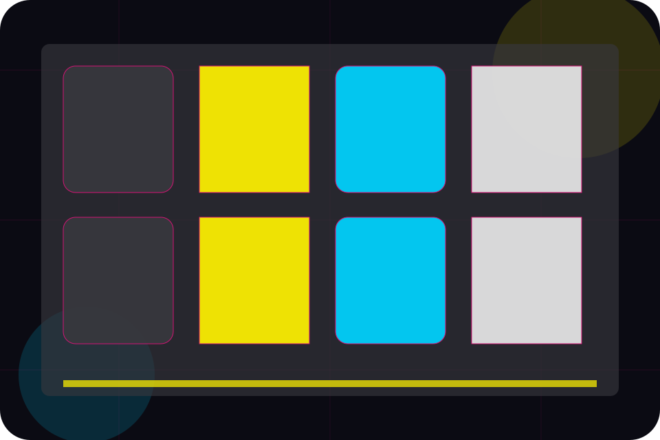
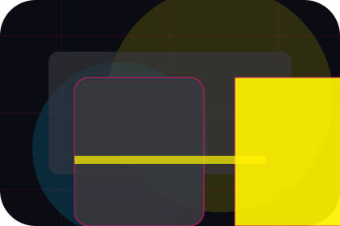
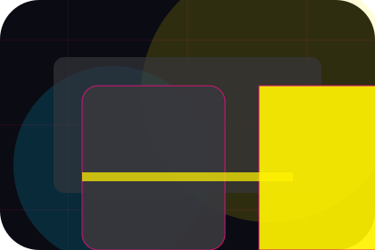
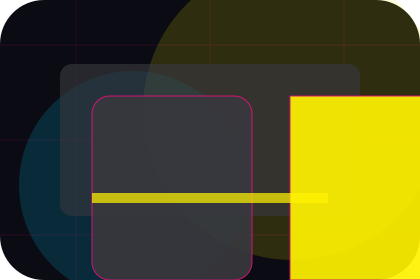
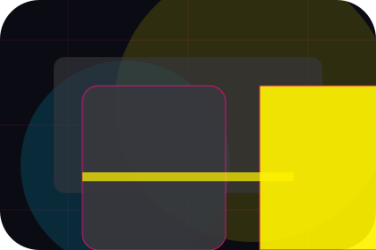
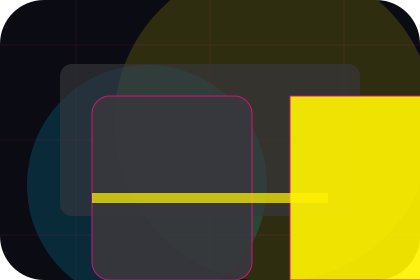
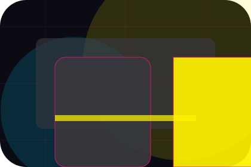
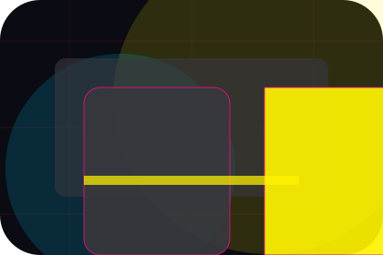
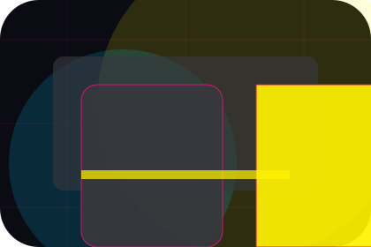
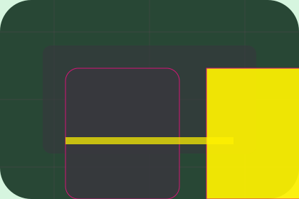

Contact / 01
Contact by Wave
Contact shaped for media, broadcasting & digital content decisions.
Contact opens as a clear media decision hub: what Wave offers, who it helps, why it matters, and which route to take first.
The first screen combines positioning, proof, primary action, and fast internal navigation, so people can act immediately or compare the rest of the contact route with context.
Media scopeCompare optionsRequest advice
Angular media hero
Filter the schedule
Select the closest route and Wave keeps the next step, proof, and follow-up expectation aligned with audience reach and timing.

Contact / 02
Editorial
Editorial makes the contact path concrete: what to send, how the response works, and what Wave needs before visitors advertise with the team.
The section reduces contact friction by naming the channel, expected detail, privacy path, and response expectation instead of dropping visitors into a generic form.
Advertise With Us
Details
What information helps Wave respond with a useful answer instead of a generic reply.

Timing
How the visitor should think about response, urgency, location, or availability.

Reply
The expected next message keeps scope, timing, and the first practical step clear.
Contact / 03
Advertising
Advertising makes the contact path concrete: what to send, how the response works, and what Wave needs before visitors advertise with the team.
The section reduces contact friction by naming the channel, expected detail, privacy path, and response expectation instead of dropping visitors into a generic form.
Advertise With UsDetails
What information helps Wave respond with a useful answer instead of a generic reply.
Timing
How the visitor should think about response, urgency, location, or availability.

Reply
The expected next message keeps scope, timing, and the first practical step clear.
Contact / 04
Support
Support explains the practical scope, best-fit situations, and expected outcome so media visitors can compare options without decoding jargon.
The section keeps the offer concrete: what is included, who it is best for, what decision it supports, and which linked route gives the deeper detail.
Open ContactWave structures support around best fit, what changes, and a clear next route so visitors can compare the block quickly before they advertise with the team.
Advertise With UsContact / 05
Press
Press makes the contact path concrete: what to send, how the response works, and what Wave needs before visitors advertise with the team.
The section reduces contact friction by naming the channel, expected detail, privacy path, and response expectation instead of dropping visitors into a generic form.
Advertise With UsDetails
What information helps Wave respond with a useful answer instead of a generic reply.

Timing
How the visitor should think about response, urgency, location, or availability.

Reply
The expected next message keeps scope, timing, and the first practical step clear.
Contact / 06
Form
Form makes the contact path concrete: what to send, how the response works, and what Wave needs before visitors advertise with the team.
The section reduces contact friction by naming the channel, expected detail, privacy path, and response expectation instead of dropping visitors into a generic form.
Advertise With UsWave keeps form practical: send the key details, choose the right contact route, and know what kind of reply to expect.
Advertise With Us
Contact / 07
Routing
Routing makes the contact path concrete: what to send, how the response works, and what Wave needs before visitors advertise with the team.
The section reduces contact friction by naming the channel, expected detail, privacy path, and response expectation instead of dropping visitors into a generic form.
Advertise With UsDetails
What information helps Wave respond with a useful answer instead of a generic reply.

Timing
How the visitor should think about response, urgency, location, or availability.

Reply
The expected next message keeps scope, timing, and the first practical step clear.
Contact / 08
Response
Response makes the contact path concrete: what to send, how the response works, and what Wave needs before visitors advertise with the team.
The section reduces contact friction by naming the channel, expected detail, privacy path, and response expectation instead of dropping visitors into a generic form.
Advertise With Us- 01
Details
What information helps Wave respond with a useful answer instead of a generic reply.
- 02
Timing
How the visitor should think about response, urgency, location, or availability.
- 03
Reply
The expected next message keeps scope, timing, and the first practical step clear.
Contact / 09
Submit
Submit makes the contact path concrete: what to send, how the response works, and what Wave needs before visitors advertise with the team.
The section reduces contact friction by naming the channel, expected detail, privacy path, and response expectation instead of dropping visitors into a generic form.
Advertise With UsDetails
What information helps Wave respond with a useful answer instead of a generic reply.
Timing
How the visitor should think about response, urgency, location, or availability.
Reply
The expected next message keeps scope, timing, and the first practical step clear.
Contact / 10
Advertise With Us
Wave closes the contact route with a clear action, a quick reminder of the value, and a low-friction way to advertise with the team.
Visitors who are ready can use the primary action. Visitors who are still comparing can scan the section links, proof, and support routes before they advertise with the team.
Advertise With UsThe final block keeps the choice simple: act now, compare one more proof route, or send enough detail for a focused response.
Advertise With Usaudience reach and timing
Advertise With Us
A media site with bold editorial grid, neon category strips, episode cards, and advertiser download routes. Contact ends with a direct path to advertise with the team, plus enough context for visitors who still need to compare.

Advertise With UsNotes
Information is provided for planning and should be reviewed for the final client, location, and operating rules.